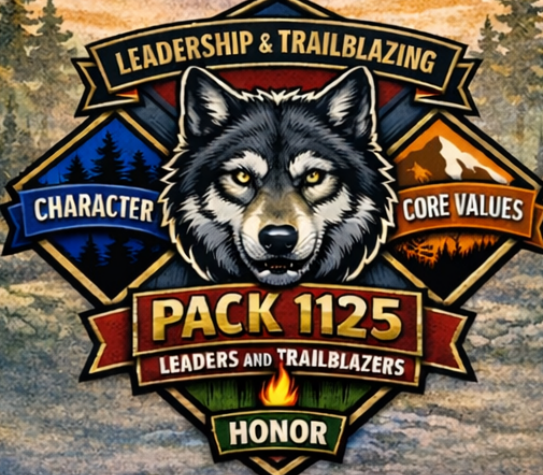

About Pack 1125
Who we are, what Cub Scouting is, and the team behind the pack.
What Is Cub Scouting?
Cub Scouting is a family-centered program for youth in kindergarten through 5th grade. Scouts learn by doing — hands-on activities, outdoor adventures, and service projects — while working through age-appropriate achievements with their families.
Parents and guardians are a core part of the program. In Cub Scouting tradition, adult leaders are called Akela, a reminder that grown-ups guide, encourage, and support every Scout's journey. Scouts progress through the ranks — Lion, Tiger, Wolf, Bear, Webelos, and Arrow of Light — starting with the Bobcat achievement, and live by the Scout Oath, the Scout Law, and the motto "Do Your Best."
Pack 1125: Leaders and Trailblazers

Pack 1125 was established in November 2025 to serve families with students attending Covington-Harper, Swans Creek, Triangle, and Leesylvania Elementary Schools in Dumfries, Virginia.
We are a secular pack — open to all families — and we welcome both boys and girls in grades K–5. Everything we do is guided by our four pillars: Leadership & Trailblazing, Character, Core Values, and Honor — preparing Scouts to become confident, capable leaders of character in their families, schools, and communities.
Pack Leadership
- Cubmaster Clive Vella
- Committee Chair Dr. Neville Welch
- Website & Technical Support Brandon Rogers
- Den Leaders & Committee Members We're filling these roles now — volunteer with us
Pack 1125 is new and growing, and we're filling leadership roles now. Cub Scouting runs on parent volunteers — every adult leader gets Scouting America's Safeguarding Youth training, and no experience is needed. Ask us how you can help.
Part of Something Bigger
Pack 1125 is part of the National Capital Area Council (NCAC) of Scouting America, serving youth across Washington, DC, Maryland, and Virginia. Within NCAC, our pack belongs to the Prince William District.